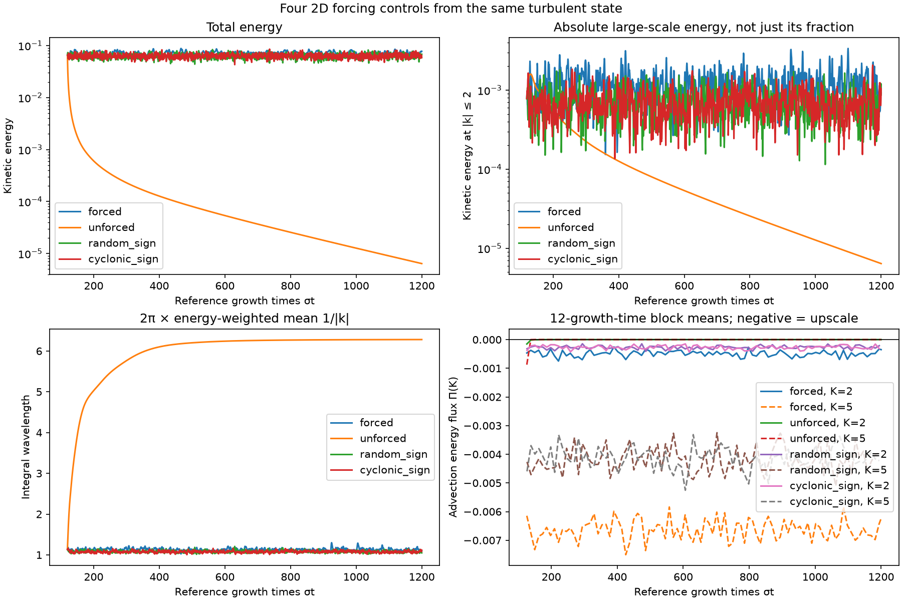
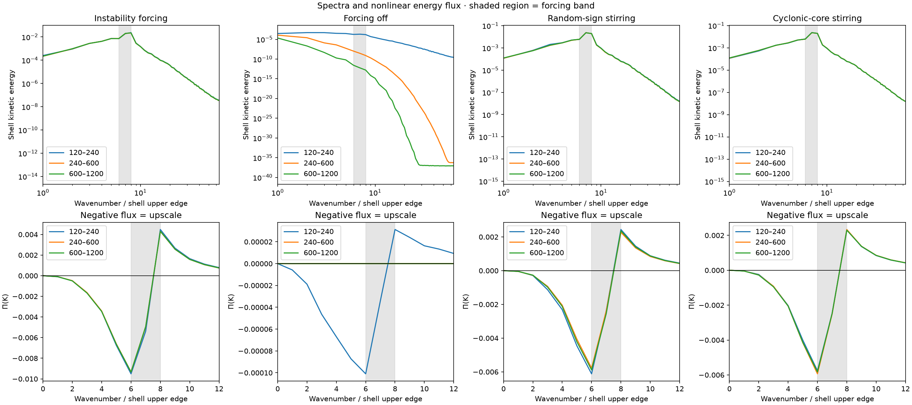
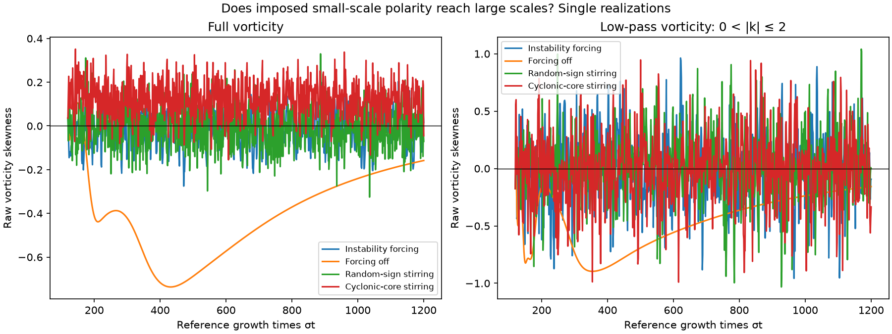

COMPLETED ON UNITY · 16 NOVEMBER 2026
Upscale transfer without a dominant large vortex
Four matched 2D experiments, continued from the same turbulent state at σt = 120 through σt = 1200. Instability forcing, forcing off, random-sign stirring and cyclonic-core stirring.
Top: instability forcing / forcing off. Bottom: random-sign / cyclonic-core stirring. One actual horizontal plane per case; no vertical levels or tracer exist in this model. All 901 saved frames, 12 frames/s, 75.08 seconds. Fixed shared symmetric asinh vorticity scale, width 0.1, limits ±18.0307, no clipping or framewise normalization. The decaying case becomes almost white on this shared scale. Positive ζ is counterclockwise and cyclonic for positive f. Time is dimensionless (σ = 0.6), not Earth or Jupiter days.
What the longer runs establish
The instability-forced run has persistent upscale advective energy transfer below the forcing band. Over σt = 600–1200, mean Π(5) = −0.00664 and Π(2) = −0.000503; negative denotes upscale transfer. Nevertheless only 1.67% of its energy lies at |k| ≤ 2 on average. The largest-scale energy fluctuates without sustained accumulation. This is evidence for upscale transfer, not a broad inertial range or a box-scale condensate.
The unforced case decays from E = 0.0651 to 6.41 × 10⁻⁶. Its increasing fraction of energy at low wavenumber mostly describes what survives the decay; its absolute large-scale energy falls. A large integral scale alone is not evidence of a sustained inverse cascade.
Fixed cyclonic-core stirring biases the sampled full-field vorticity skewness positively, but does not demonstrate a preferred large-scale cyclone. Its late full-field mean skewness is +0.117, compared with −0.012 for random-sign stirring. Low-pass means are +0.0085 and +0.0172, respectively, with strong fluctuations. These are single realizations, not an ensemble test or a statistical confidence claim.
Late-window comparison: σt = 600–1200
| Case | Mean E(|k|≤2)/E | Mean full ζ skew | Mean low-pass ζ skew | Energy input rate | Drag work rate | Viscous work rate |
|---|---|---|---|---|---|---|
| Instability forcing | 1.67% | -0.0064 | -0.0033 | 0.038563 | -0.032155 | -0.0064017 |
| Forcing off | 99.99% | -0.3212 | -0.3148 | 0 | -3.2811e-09 | -4.4021e-08 |
| Random-sign stirring | 1.09% | -0.0120 | +0.0172 | 0.031748 | -0.02647 | -0.0052723 |
| Cyclonic-core stirring | 1.13% | +0.1167 | +0.0085 | 0.03181 | -0.026546 | -0.0052728 |
Skewness and energy fractions are means of saved diagnostics; stochastic samples are post-pulse. Work rates are true integrated-window rates. Tiny numerical-advection and storage terms are retained in the downloadable report. Window balance residuals are below 3 × 10⁻¹⁵ in model units. Cubic drag removes most supplied energy; this is consistent with inhibited large-scale accumulation but does not by itself isolate the cause.



Model and interpretation limits
Oceananigans, 128 × 128 doubly periodic 2π square, constant f = 1, no beta, no vertical dynamics or convection. Viscosity ν = 0.001 and cubic velocity drag coefficient 1 are fixed. Instability forcing acts in k = 6–8, excluding kₓ = 0. Stochastic controls use translated band-limited vortices every 0.2 time units, the same random locations and matched expected energy input (0.0318728); actual work is measured. A positive core has compensating opposite-signed surroundings, preserving zero circulation. All controls start from the same σt = 120 checkpoint.
Constant f has no vorticity-dynamical effect in this incompressible horizontal 2D periodic model. The fixed core sign is explicitly prescribed using sign(f); this does not derive the physical rotation-sensitive mechanism sought in the 3D convection runs. These tests ask whether imposed small-scale polarity transfers to large scales.
The native numerical energy budget closes to near roundoff, but closure is not resolution convergence. The existing third-moment attribution gate fails for the instability-forced and decaying runs (numerical-advection ratios 10.07% and 38.84%, threshold 10%); both stochastic cases pass that numerical gate. No spontaneous sign-selection mechanism or converged third-moment attribution is claimed.
Records
Production jobs 1818426_0/1 and 1819738_0/1 completed successfully. Render jobs 1818429 and 1819743 completed; publication job 1845114 verified all 901 web-movie frames and a full decode. All scientific computation, analysis and rendering took place on Unity. Only finished publication assets were transferred for GitHub upload.
Detailed results, parameters, sampling notes and asset checksums · Saved skewness series · Stochastic forcing and publication source · Long-control source